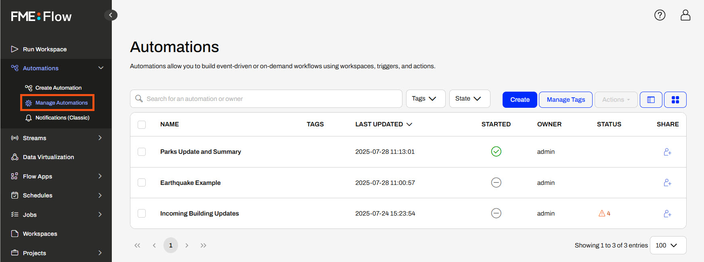
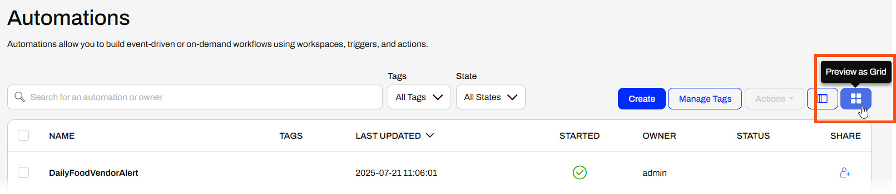
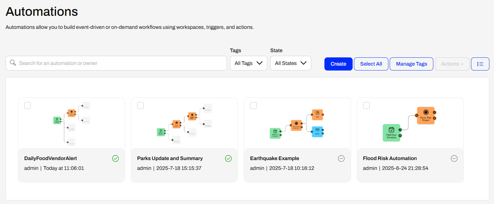
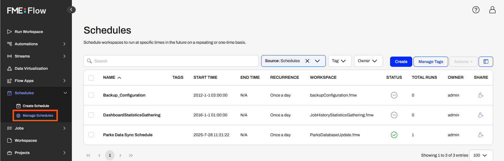
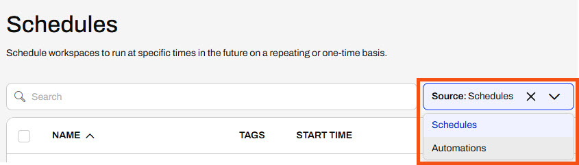
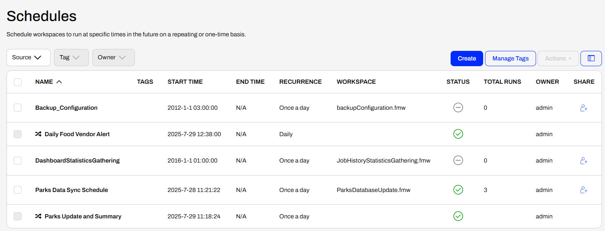
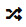
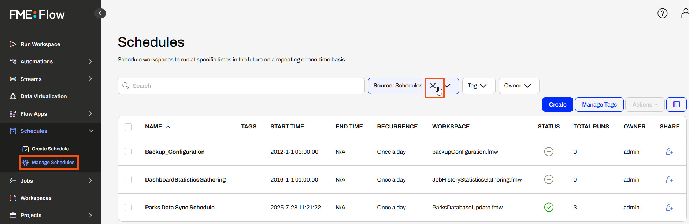
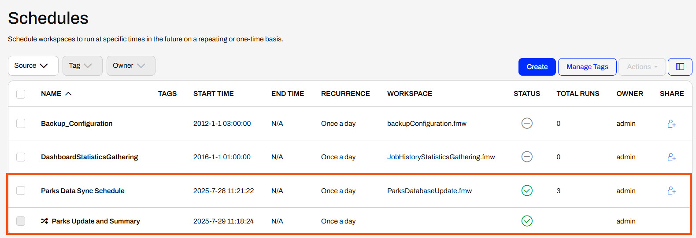
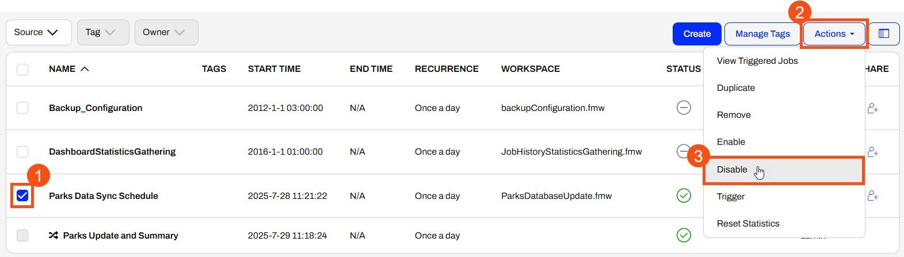

After completing this lesson, you'll be able to:
The content used in this lesson builds on the previous two lessons in this course. To complete the exercise, please complete the exercises in Schedule a Workspace to Run and Schedule Workspaces with Automations first.
You can view and manage Automations on FME Flow from the Manage Automations page. FME Flow lists all Automations you can access and displays some details and statistics. You may search Automations by name and user, or filter by Tags or State (whether it's started or not). You can see details about each Automation in the columns from the list view, such as whether it's started and the owner.

Automations also has a grid view option you can enable with the Preview as Grid button.

FME Flow displays a preview of the Automation canvas and some details for each.

When you select an Automation, you can perform additional operations from the Actions drop-down menu. You may start or stop an Automation, view triggered jobs and log files, and perform other actions without opening the Automation itself. Whether you view your Automations as a list or grid, these options are the same.
Some options are greyed out because they're not currently configured to perform the action. For example, you cannot Start an Automaiton that is already running. The Create Automation App option requires the Automation to use a Manual Trigger.
Like Automations, the Manage Schedules page displays a list of Schedules on FME Flow and some information about them. You may see the recurrence interval and the workspace running on the schedule.

Manage Schedules on FME Flow has an additional filter option, Source. By default, FME Flow selects Schedules for you. You can use the drop-down to choose Automations, which returns all Automations that use a Schedule trigger.

You may also remove the filter to show both Schedules and Automations running on a Schedule. This will allow you to see all your workflows running on a schedule, regardless of whether you created them as Schedules or Automations.

This icon denotes the Automations: 
You may still select Schedules and perform the same actions on them. To perform actions on the Automations, you'll need to go to the Manage Automations page. This page solely lists the Automations that use a Schedule trigger.

Jennifer has built a Schedule and an Automation that runs the same workspace on FME Flow to push updates between databases. The Automation runs the same workspace as the Schedule she built previously and a second workspace to generate a summary of updates. Now, she will manage her Automations and Schedules on FME Flow and stop the duplicate Schedule.
Follow along with Jennifer's steps as she manages Schedules and Automations on FME Flow and disables her previous Schedule.
Jennifer opens Manage Schedules on FME Flow and removes the Source filter set to Schedules to show both Schedules and Automations.

Now she sees both the Schedule and Automation she created. They're both enabled to run once a day.

Since the Automation expanded her existing schedule workflow to include a second workspace, Jennifer doesn't need the Schedule to run the first workspace. Jennifer clicks the check box to select the Parks Data Sync Schedule, expands the Actions options, and selects Disable to stop the Schedule from running the workspace once a day.

Jennifer has managed her Schedules and Automations on FME Flow and disabled the Parks Data Sync Schedule. Now, only the Parks Update and Summary will run, updating the database and generating a summary of updates daily.